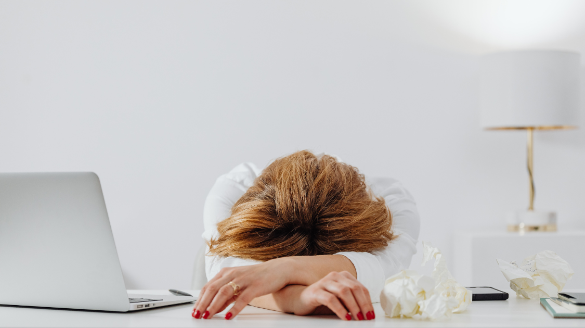

Student Life
How to Avoid the Harms of a Sedentary Lifestyle
By Holly Li | Published May 7, 2021 9:35 p.m. PST

Sedentary lifestyles refer to spending eight or more hours a day, twenty days a month in a seated position. Because of COVID-19, outdoor activities are limited. Cinemas, theatres, restaurants, and shopping malls become risky places to visit. As a result, people generally seek entertainment and go to work virtually. As people spend more time on video conferencing, video games, online movies, and social media, that is how people sit longer in front of the computer and develop sedentary lifestyles.
The Harms of a Sedentary Life
Sedentary lifestyle is very detrimental to people’s physical health. According to the WHO, approximately 2 million deaths per year are attributed to physical inactivity. Sedentary lifestyle can lead to diabetes, cervical spondylosis, sudden death, obesity, cancer, and heart attacks. One of the most conspicuous signs of chronic disease caused by a sedentary lifestyle is the crack sound made by one’s neck and shoulder. Slight uncomfortableness can develop into long-term pain if one adopts an unhealthy routine.
Solutions to Harms
Give Your Eyes a Break
According to research, one should take a five-minute break for each 20 minutes spent in front of an electronic device. Therefore, it is beneficial to stand up regularly to move the eyes away from the screen. In addition, steam eye masks and eye drops can also be useful in relieving fatigue.
Exercises
Physical exercises are very helpful to relax one’s strained muscles. Stretching is especially effective in relieving back pain caused by sedentary lifestyle. Jogging, sports, and yoga keep the muscles active.
Change the Setting of the Room
The positions of the laptop, desk, and chair are crucial to people’s physical well-being. Laptops should be placed on a slightly lower position than one’s eyes. Thus, when one stares at the laptop, one only needs to lower one’s head moderately, which keeps the person in a good posture. If the height of the desk is not enough to support such a position, purchasing an external keyboard can be a satisfactory solution. In addition, chairs are also important in maintaining good posture. Good computer chairs should provide support for one’s lumbar. If the computer chair does not have a streamline design, a cushion can help provide the same effect.
Stop Procrastination
Online assignment submissions can lead to worse time management and last-minute submissions. Procrastination prolongs people’s time spent in front of the computers. Additionally, procrastination is detrimental to one’s learning and consumes people’s energy. Therefore, reasonable planning should supplant procrastination.